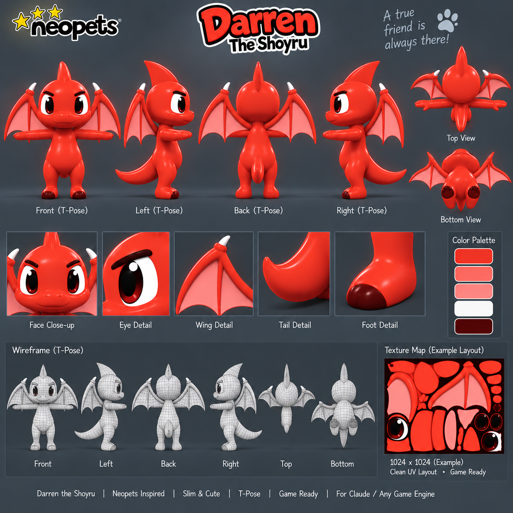
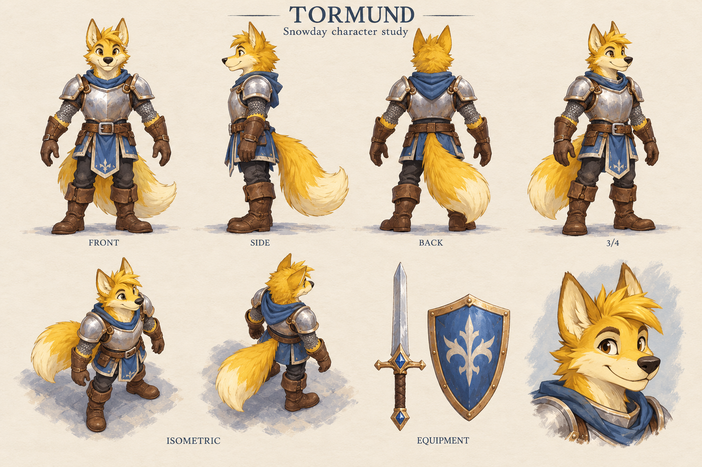
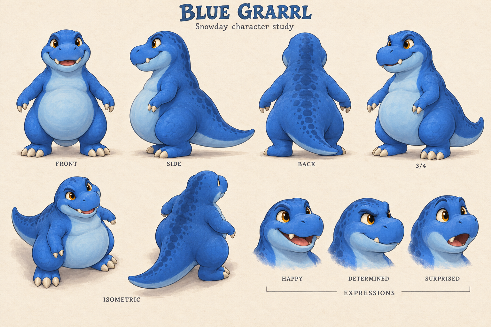
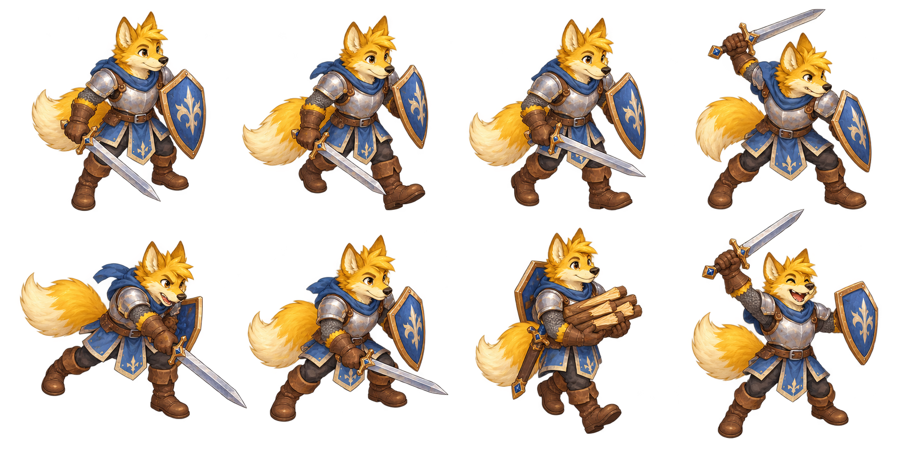
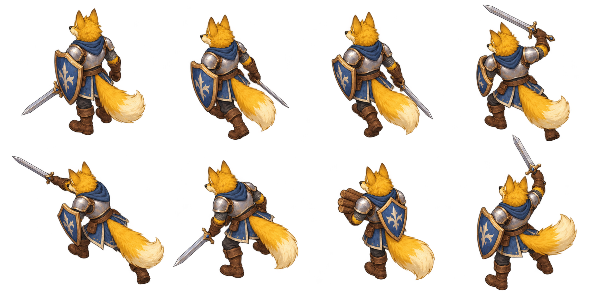
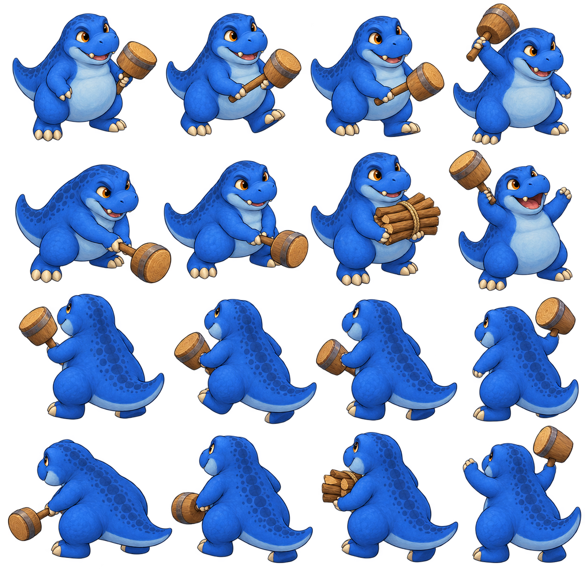

First snow of the year. Ruffy saw a jackrabbit, slipped his leash, and vanished into the white prairie. The Bramble Baron's goons hold every hill, armed with rubber chickens, pool noodles and baguettes. Darren is going in anyway.
Play the 3D valley · Darren, Tormund & Bucky →
Pair your controller in your phone’s Bluetooth settings, open this game in your browser, then press and release a button. Tap the screen once to enable sound.
Left stick moves · right stick aims · X / □ or RT / R2 attacks · A / × dodges · B / ○ rolls · Y / △ uses Blizzard · View / Share changes combat style · LB / RB turns the camera. Hold LT and D-pad up/down to zoom.
Menus: stick or D-pad moves, A / × selects, B / ○ goes back, Start / Options pauses or resumes. Right stick scrolls long menus and artwork. Remap combat controls in Pause. Both chapters use the same controls.
Phone play: turn sideways for more room. Left thumb moves; right thumb attacks. Tap dialogue to continue.
Sound on. Your private snowday adventure. Original synthesized music. Fan-made prototype.
If found, please howl loudly.
Take a breath. Your friends can wait.
F or the Paws ⇄ Snow button changes style. With Bare Paws, tap or hold J for jab → cross → kick → tail sweep. K performs a wide tail sweep. Controller View changes style. Darren carries no weapon.
In Snowball style: Hold J or the Snowball button for a packed shot. K starts a growing ball; steer with movement and press K again to launch. Space dodges. L spends 100 Snow on a blizzard.
Tormund joins after your first camp. He uses his sword; Darren keeps his own snowball powers.
Every three cookies gives Darren a slightly rounder belly and +2 kick, +4 tail-sweep and +5 snow-roll damage, up to three stages. His speed stays quick. Bigger sizes add softer belly and scarf follow-through to attacks. Size saves with your camp checkpoint. Scarf-free Darren has a smooth, featureless cartoon body. Gentle breathing and belly wobble adapt to his size.
Use a browser-supported Bluetooth or USB controller. Left stick moves; right stick aims. In menus, A / × confirms, B / ○ goes back, and Start / Options resumes, regardless of combat bindings. Right stick scrolls. Start always pauses during gameplay, including dialogue. D-pad or left stick navigates. Standard Xbox and PlayStation button positions are supported; use the buttons below to remap your controller.
Based on your model sheet: red body and hands, dark-red toe caps, single crest, pink wings and a smooth chest. You can show or hide his yellow scarf above.

Tormund follows with his sword and shield. Bucky uses a wooden mallet and carries the firewood. Both defend Darren automatically when enemies come close.





Drag the left circle to move. Hold COMBO for punches, kicks and a tail sweep. Switch to Snow, hold SNOW to pack a snowball, then release to throw. DODGE avoids attacks; SWEEP / ROLL uses your other move. Blizzard appears when Snow power is full.
Turn the phone sideways for a wider view. Map and camera controls are here in Pause. Your checkpoints are saved in this browser on this device.
Progress saves at cleared camps and gathered wood piles. Continue restores health and keeps your completed objectives.